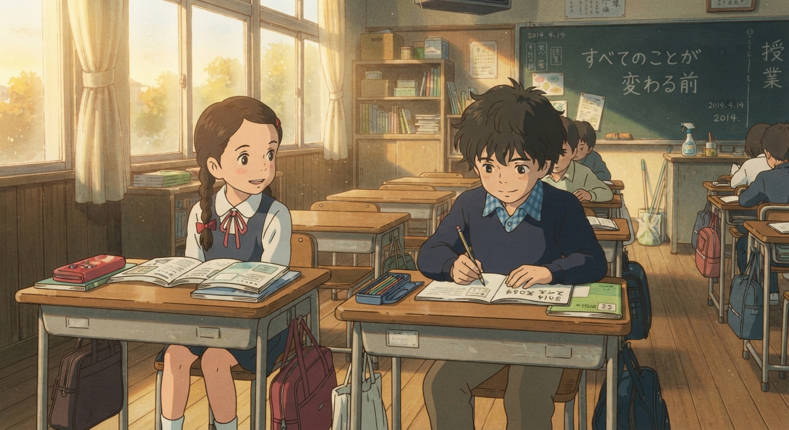
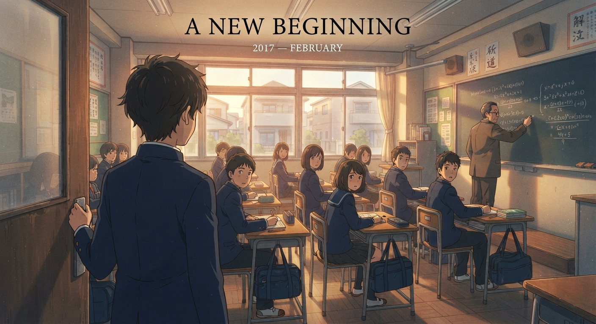

I was an introvert, the kind of kid who would rather stay quiet
than be the center of attention. But somehow, I still managed
to make a few friends along the way.
I was good at my studies. I enjoyed taking part in other
activities too. And for the most part, I was having the kind
of childhood I thought would last forever.
Then there was her.
She was the class topper.
And somehow, every now and then, I managed to take her place
at the top of the class.
At first, it was nothing more than a little competition.
Then, somehow, we became friends.
We were just two children back then.
We didn't know what love was.
We didn't know how quickly people could become important to us.
We didn't know that some of the happiest days of our lives
can become the memories that hurt the most.
We were just children...
living our little days with joy.
And she was my first crush.
I just didn't know yet how important she would become to my story.

Some memories begin before we understand their meaning.
BEFORE YOU BECOME A MEMORY
2014 — SEPTEMBER
Naturally, as a child, I had to go with them.
I didn't really understand what it meant to leave.
To me, it was just another change. Another place.
Another school. Another beginning.
But leaving meant leaving everything behind.
My friends.
My childhood.
And her.
I never knew that day would be the last time I saw my first crush.
I never knew that our last class together would actually be our last.
I never knew that our last conversation wasn't just another conversation.
It was goodbye.
“I didn't know I was looking at her for the last time.”
Neither of us knew it.
There was no dramatic farewell.
No promise to stay in touch.
No moment where we looked at each other and said,
"This is the last time we'll meet."
We were just two children, talking like we always did.
Then I left.
And somehow...
I lost her.
It was the first heartbreak of my life.
I didn't even understand what heartbreak was back then.
I only knew that someone who had been a part of my everyday
life was suddenly gone.
Days passed.
Then weeks.
Then months.
And eventually, she became something I could only find
in my memories.
A face I could remember.
A voice I could barely hear anymore.
A person who had once been right there...
and was now somewhere I couldn't reach.
She became my first love without ever knowing it.
And more painfully...
she became my first goodbye without either of us knowing
it was goodbye.
A NEW BEGINNING
2017 — FEBRUARY
Three years had passed since I started my new journey.
I had been admitted to a new school, and now I was in
9th standard—the age when most people begin experiencing
their first real feelings of love.
But I was still the same introverted kid.
I could barely make friends.
So I continued living my life without much company,
spending most of my time inside my own thoughts and imaginations.
Then, one day before my midterm examination,
I joined a coaching center.
It was a place where many students came to prepare for their exams.
And, somehow, on my very first day...
I was late.
How silly.
I finally arrived, walked into the classroom,
found a bench, and quietly sat down.
I opened my book.
The lecture was already going on.
So I tried to focus.
I listened to the teacher.
I looked at the board.
I tried to ignore everything around me.
And then...
I noticed her.

Some beginnings arrive quietly.
A DIFFERENT KIND OF FEELING
She sat on the seat to my left.
I looked at her.
And for a moment, one thought crossed my mind—
“How can someone be this beautiful?”
I didn't say anything.
I didn't smile.
I didn't even react.
I just looked at her for a moment and turned my attention
back to the lecture.
But something had already changed inside me.
There was a strange feeling growing in my chest.
Something I couldn't explain.
Something I had never felt before.
I didn't know what it was.
Maybe it was admiration.
Maybe it was just a silly little crush.
Or maybe...
it was love.
I was only fifteen.
What did I know about love?
All I knew was that, from that day on,
the seat beside me didn't feel like just another seat anymore.
“Maybe... it was love.”…?
SOMEONE I DIDN'T EXPECT
I went back to my normal days.
I attended school.
I went to coaching.
I studied.
I went home.
Everything seemed normal again.
I didn't think too much about her.
At least, I tried not to.
Then, one day...
she spoke to me.
Somehow, she was the one who started the friendship.
I didn't expect it.
Honestly, I had never even thought about talking to her myself.
She seemed so perfect to me that I couldn't imagine why
someone like her would even want to talk to someone like me.
But somehow...
it was happening.
It was actually happening to me.
For a moment, I didn't even know what to say.
My mind went completely blank.
What was I supposed to say?
How was I supposed to respond?
I had imagined talking to her before...
But imagining something and actually experiencing it
were completely different things.
Still, she talked to me so naturally.
So nicely.
As if there was nothing unusual about it.
And slowly, that awkward silence inside me began to disappear.
I don't remember exactly what we talked about that day.
Maybe it was something completely ordinary.
Maybe it was something that neither of us would remember
years later.
But I remember one thing.
That was the day she stopped being just the girl sitting beside me...
and became someone in my life.
I THOUGHT THIS TIME WAS DIFFERENT
She talked to me.
We became friends.
Slowly, talking to her became part of my everyday life.
I started looking forward to those little conversations.
And without even realizing it, I became attached.
Maybe I thought I had finally found something I had lost years ago.
I thought this time would be different.
But...
I was wrong.
I was wrong to think that maybe she was the one.
One day, she asked me about something I knew nothing about.
Someone had spread a story about her and somehow given
all the credit for it to me.
“Why did you say all those things about me?”
I was confused.
I didn't know what she was talking about.
I tried to explain.
I tried to convince her that I hadn't said anything.
But she wouldn't listen.
Not even once.
No matter how much I tried to explain myself,
she had already made up her mind.
Then she said something I never expected to hear.
“Don't talk to me anymore.”
And just like that...
the friendship we had built disappeared.
She told me to forget everything.
Forget our conversations.
Forget our friendship.
Forget her.
All because of something I never even said.
I didn't know what to do.
How could I prove something I hadn't done?
How could I make someone believe me when they had
already decided not to?
That day, I learned something I was too young to understand before.
Sometimes, you don't lose someone because you did something wrong.
Sometimes...
you lose them because of something they believed was true.
And the most painful part wasn't losing her.
It was knowing that I never even got the chance to make things right.
A misunderstanding had taken someone away from me.
THE TRUTH CAME TOO LATE
After that day, the days passed.
And somehow...
one whole year went by.
Even though we were still in the same section,
she didn't talk to me.
She ignored me.
And I slowly got used to it.
During that one year, I started losing faith in myself.
Maybe I wasn't capable of making a good friend.
Maybe I wasn't meant to have someone who would truly understand me.
Maybe love just wasn't something meant for me.
I still didn't have any real friends.
But I was still me.
Quiet.
Introverted.
Lost inside my own thoughts.
Then came the last day of our 10th-grade exams.
I never expected anything unusual to happen that day.
But suddenly...
she came to me.
After an entire year of silence, she finally spoke to me.
She apologized.
She told me about the misunderstanding.
She finally realized that I had been telling the truth.
For a moment, I didn't know what to feel.
I had waited so long for that moment.
Maybe a part of me had always wanted to hear those words from her.
But then...
it was too late.
Because the very next day, I had to leave.
I was moving to another city for college admission.
One day.
That's all the time we had.
After a whole year of silence...
we finally talked again.
And just when things could have been different...
I had to leave.
Maybe life has a strange sense of timing.
It gave me the apology I had been waiting for...
one day before taking me somewhere else.
And just like that,
I left.
No anger.
No hatred.
No proper goodbye.
Just a feeling that maybe...
we had met at the wrong time.
ANOTHER NEW BEGINNING, BEFORE IT ALL BEGAN
JUNE 25, 2020
I had just finished my SSC.
It was the time when everyone had to say goodbye
to their friends, their best friends, and the people
they had spent so many years with.
After that, I moved back to my hometown.
Time passed.
Eventually, the day came when my SSC results were published.
There weren't many colleges in my hometown that I considered
suitable for me.
I felt disappointed, but instead of giving up,
I made a decision.
I would try to transfer to another college.
Eventually, I got admitted to one that was relatively close to my home.
At that time, I thought I was simply choosing a new place
to continue my education.
I didn't know I was about to enter a chapter of my life
that I would remember for a very different reason.
A NEW BEGINNING
OCTOBER 11, 2020
It was the day our opening class began.
Since I had transferred from another city,
I decided not to make any friends.
I thought it would be easier that way.
If I didn't become attached to anyone,
I wouldn't have to regret leaving them later.
So I started going to college alone.
The college itself was simple.
There wasn't much open space,
and it was located beside the Dhaka-Sylhet Highway.
There wasn't anything particularly special about the place.
Anyone could get admission, and because of that,
I didn't feel like my SSC result meant much there.
Most of the students already knew each other.
They had graduated from the same schools
and had joined the college together.
They came in groups.
They laughed together.
They talked together.
And I...
I stood alone.
The opening ceremony started at 10:00 AM.
I found an empty bench and sat there by myself.
The ceremony continued for about an hour and twenty minutes.
Then it ended.
I simply returned home.
It was the beginning of my college life.
But somehow...
I already felt like I didn't belong there.
THE EMPTY BENCH
The next day, our classes started at 10:00 AM
and ended at 1:40 PM.
I arrived at college at around 9:45 AM.
Most of the students had already arrived.
I looked around and noticed that the front bench was empty.
So I took that seat.
Around me, everyone was talking.
They were introducing themselves,
making new friends, laughing and enjoying their first days together.
I just sat there quietly.
At 10:00 AM, the teacher arrived.
He asked us our names and about our previous education.
Everyone answered with excitement.
For most of them, the first day felt special.
For me...
it didn't.
One period ended.
Then another.
Then another.
And eventually, the day was over.
Everyone went home with the new friends they had made.
I went home alone.
And the next day...
I came back to the same empty bench.
WHEN EVERYTHING CHANGED
After a few months, my half-yearly examinations
started getting closer.
That's when I realized something.
I needed tuition.
Otherwise, I wouldn't be able to perform well in the exams.
So I talked to one of my teachers.
He agreed to teach me, but he gave me one condition.
“If there aren't enough students, I won't be able to continue the tuition.”
I agreed.
I didn't really have another option.
The first three days passed.
I was the only student there.
Then, on the fourth day, Sir was trying to contact another student.
He looked at me and said,
“You're lucky. I found another student.”
I felt happy inside.
At least now, I could continue my studies.
After a few moments, the phone rang again.
Sir answered the call, gave the person directions,
and then said,
“I'm coming to receive you.”
I didn't pay much attention.
I didn't even wonder whether the new student was a boy or a girl.
I didn't know their name.
Honestly, I didn't care.
About ten minutes later, the new student arrived.
There was no proper introduction.
But I noticed one thing immediately.
The new student was a girl.
She was from the Arts group,
and she seemed to be quite introverted.
At that moment, she was just another student.
I had no idea how important she would become.
BEFORE WE BECAME FRIENDS
A few days passed.
One morning, our tuition was supposed to start at 7:30 AM.
But Sir was already thirty minutes late.
I thought it was just another ordinary day.
I was wrong.
She and I were sitting in the room,
going through our previous lessons.
Then she asked me something.
She had a math problem that she couldn't understand.
She asked me to solve it for her.
That was the first time she really talked to me.
I solved the problem and asked her if she had any other difficulties.
She said no.
That could have been the end of it.
But after that day, she started asking me about other
problems she couldn't solve.
She was very introverted,
so I was surprised that she was comfortable talking to me.
But she only talked to me during tuition.
I didn't take it seriously.
I thought it was simply because we were the only two students there.
Time passed.
A month went by since we started tuition together.
Somehow, she became more comfortable around me.
She started talking to me freely.
I didn't know how it happened.
But it did.
And without realizing it...
we were slowly becoming friends.
Sometimes friendship begins with something as simple as a question.
I WISH I HAD SAID SOMETHING
One day after tuition, she said,
“I have so many problems with this topic.
Tomorrow I'll clear all of them with you.”
I simply replied,
“Okay.”
It felt like an ordinary conversation.
Then she reminded me,
“Don't miss the next class.”
I agreed.
I didn't think anything of it.
Her home was on the way to mine,
so we usually walked together for part of the journey.
That day was no different.
We walked together until she reached her home.
Before going inside, she turned toward me and said goodbye.
I was quiet.
I didn't say much.
I thought I had more time.
I thought there would always be another day.
Another class.
Another conversation.
Another chance to say something.
I never imagined that such a simple goodbye...
would be our last conversation.
I NEVER WENT BACK
When I arrived home, I heard the news.
I had been admitted to another college.
The next day was my joining day.
I was happy.
My dream had finally come true.
So I started my new college life.
But I never told anyone the real reason
behind my sudden absence.
My teachers called me.
I didn't answer.
I didn't know what I was supposed to tell them.
I didn't even go back to explain why I had disappeared.
A couple of weeks passed.
Then one day, I remembered her words.
“I have so many problems with this topic.
Tomorrow I'll clear all of them with you.”
And then...
“Don't miss the next class.”
But I missed it.
I missed that class.
I missed that conversation.
And I missed my chance.
Forever.
There was no next morning.
No next class.
No chance to walk home together again.
No chance to hear what she wanted to say.
I had left without realizing that I was leaving behind
something I would never be able to return to.
Maybe that was the cruelest part.
I didn't know it was goodbye...
until there was no way to say hello again.
I never went back.
Some doors close before we realize we were standing in front of them.
THE END?
Years passed, but sometimes I still remembered that morning.
Her voice.
Her smile.
And those simple words—
“Don't miss the next class.”
I did miss it.
And I never got another chance.
Maybe some people are only meant to stay
for a short part of our story.